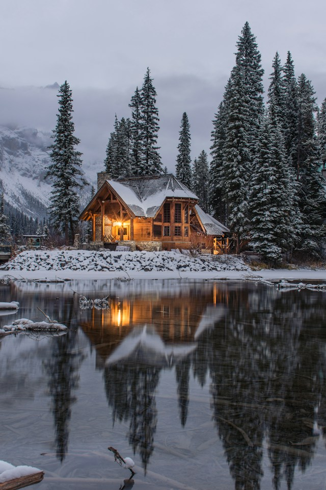
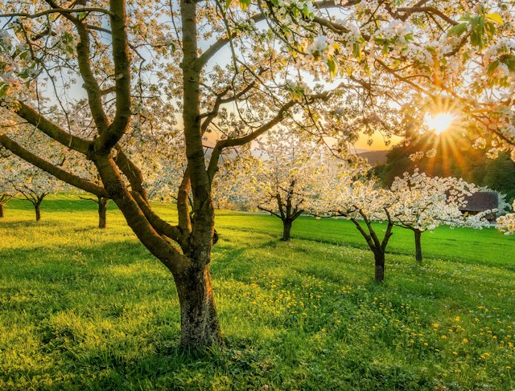
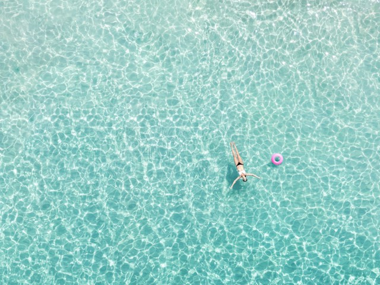
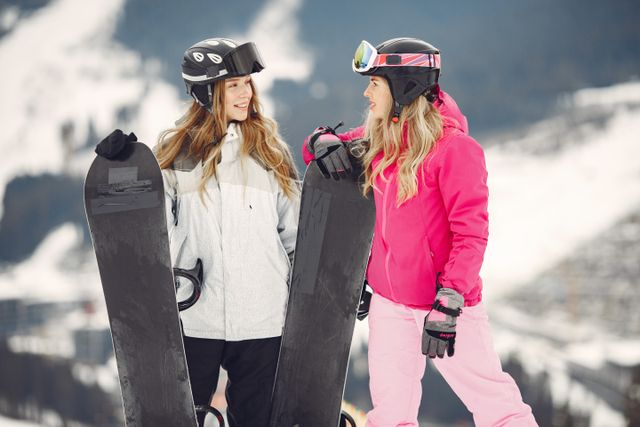
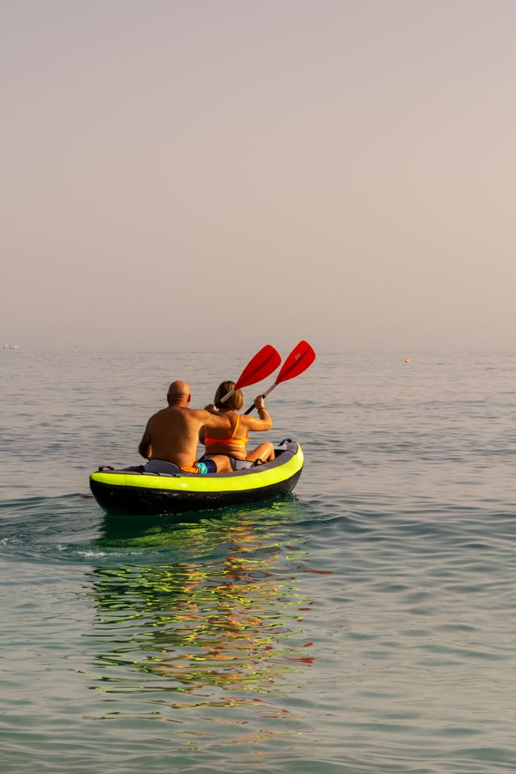

Winter is usually the coldest season of the year. In some countries, temperatures drop below freezing, and snow covers the ground. People wear warm clothes, spend more time indoors, and enjoy activities such as drinking hot chocolate by the fire

Spring is the season when the weather begins to get warmer after winter. Flowers bloom, trees grow new leaves, and animals become more active. It is a beautiful time of new beginnings and fresh growth.

Summer is usually the warmest season of the year. The days are longer, and people often enjoy outdoor activities such as swimming, picnics, and travelling. Many fruits and vegetables grow during this season.

Autumn is the season when the weather starts to cool down after summer. In many countries, leaves change colour to red, orange, and yellow before falling from trees. It is also a time when many crops are harvested.

Some people dislike winter because of the cold temperatures, shorter days, snow, and difficult travel conditions. The lack of sunlight can also affect people's mood and energy levels. However, during winter, people can enjoy activities such as skiing, snowboarding, ice skating, and building snowmen in places where it snows. They can also stay indoors, watch movies, read books, bake cookies, drink hot chocolate, or spend cosy evenings with family and friends. Some people enjoy visiting Christmas markets and celebrating winter holidays.

Summer is popular because of the warm weather, longer days, holidays, and outdoor activities. During summer, people can enjoy outdoor activities such as swimming, going to the beach, having picnics, hiking, cycling, and camping. It is also a popular time for travelling, exploring new places, attending outdoor festivals, having barbecues, and spending time with friends and family. The warm weather and longer days make it easier to enjoy activities outside.